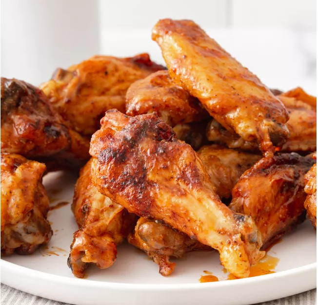

Chicken Wings

Description
Wonderful tasty treats that the whole family can enjoy. Goes great at any time and
can be as mild or as spicy as you like them!
Ingredients
- For Chicken Wings
- Chicken Wings - 3 pounds
- Salt - pinch of
- Vegetable oil - 2 tablespoons
- For Sauce
- Unsalted Butter - 1/2 cup (8 tablespoons)
- Franks Red Hot Sauce - 3/4 cup (can use other brands)
- Worcestershire sauce - 2 teaspoons
- Salt - 1 teaspoon
- Sugar - 1 teaspoon
- Garlic Powder - 1 teaspoon
Steps
- For Sauce
- Mix all sauce ingredients together on low heat. Use
whisk once the butter melts. Set aside once done.
- For Chicken
- Cut the wings if needed.
- Heat the grill to about 250 F or 300 F. This will allow
the fat to slowly drain out.
- Grill the wings with Vegetable oil and salt. cover and
cook for about 30 minutes
- Baste the wings with the sauce from before. Every 15
minutes turn the wings and baste again. Ensure there is
some sauce left over at the end.
- Once done throw chicken wings and last bit of the sauce
into a bowl and toss. Serve and enjoy.